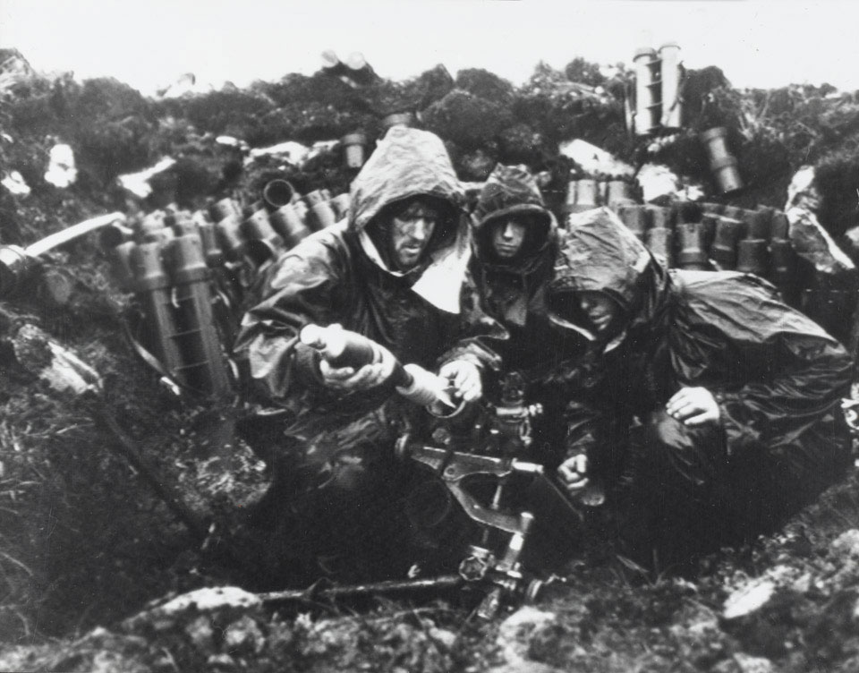
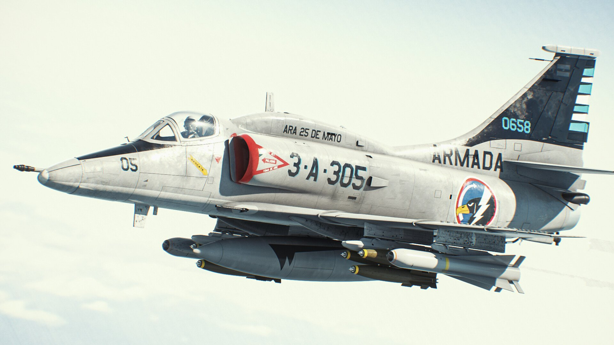
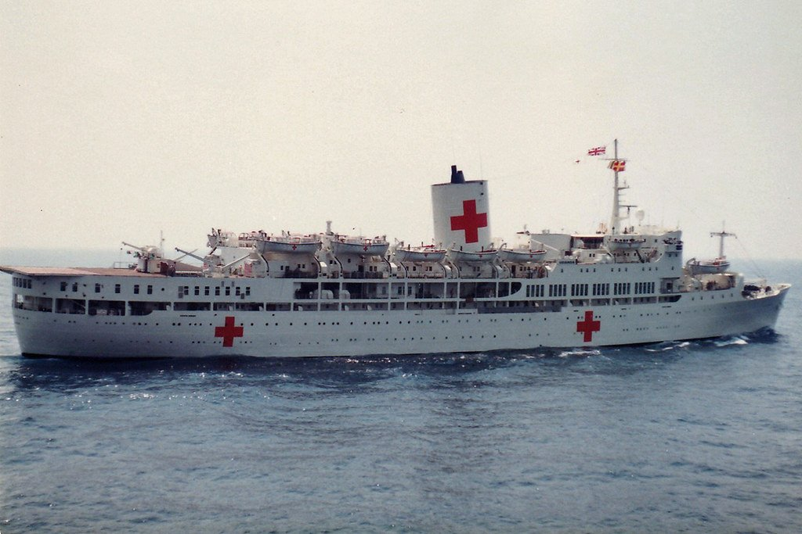
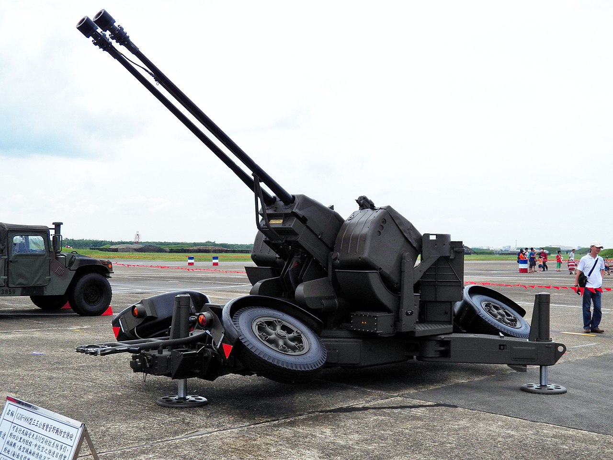
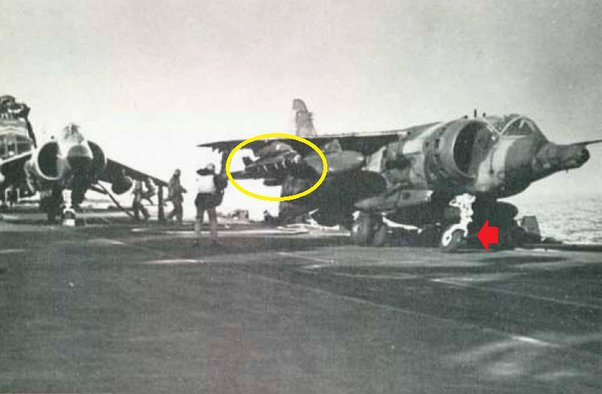
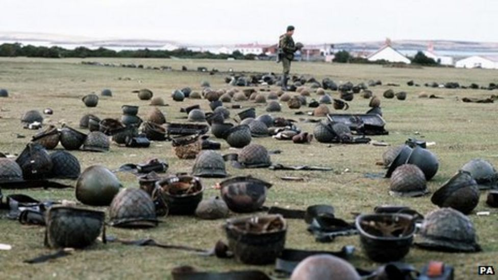

포클랜드 전쟁 잡담 - 구스그린(Goose Green) 전투 (하)
게시: 2022-05-26T06:30:38+09:00
<박격포가 수훈갑> 존스 중령이 전사한 뒤 양측의 싸움은 개싸움으로 발전. 고지를 점거한 아르헨티나군은 관측을 통해 아군의 포격을 효과적으로 유도할 수 있었으므로 언덕 아래 영국군 A중대에게 신나게 포격을 퍼부을 수 있었으나, 영국군은 눈에 보이는 것이 거의 없었으므로 영국군의 야포 3문은 별다른 명중탄을 내지 못함. 아마 요즘처럼 드론이 있었다면 이야기가 많이 달랐을 것. 이 상황에서 결정적인 공훈을 세운 것은 현장에 밀접해 있던 영국군 A중대의 2문의 박격포. 이들은 위기의 상황에서 2시간 동안 총 1000발이 넘는 포격을 언덕 위 아르헨티나 참호에 퍼부었음. 말이 쉽지 2시간 동안 계속 15초에 1발씩 쏜 거임. 그야말로 엄청난 스태미나. 이 포격은 아르헨티나군을 직접 살상하기도 했지만 언덕 위에서 포격을 유도하던 관측병들을 제압함으로써 영국군을 위기에서 구함. 이들은 물기가 많고 진창 투성인 지대에서 무거운 박격포를 나르고 쏘느라 진짜 고생이 많았다고. (사진은 구스그린 전투가 아닌 켄트산 전투에서의 영국군 81mm 박격포 부대).

<공군! ...거기가 아니야!> 영국군의 박격포가 예상 외로 선전하여 큰 피해를 입은 아르헨티나군은 마치 미군처럼 "Air Support!"를 외침. 이미 동틀 무렵에 무전으로 불러둔 본토의 Skyhawk (사진1) 공격기들이 날아오고 있었던 것. 곧 스카이호크들이 폭격해줄 것을 알고 있던 아르헨티나군은 생각을 해보니 아군과 영국군을 스카이호크들이 제대로 구분을 할지 걱정이 됨. 그래서 부랴부랴 막사에서 하얀 침대 시트를 꺼내와서 아군 참호 앞에 경계선으로 깔기 시작. 그런데 그 와중에도 영국군 박격포탄이 계속 날아와서 그걸 지휘하던 주임원사가 중상을 입고 쓰러짐.

한편, 이들이 애타게 기다리던 아르헨티나 스카이호크들은 오던 길에 영국군 병원선 SS Uganda (사진2)와 딱 마주침. 전직 여객선이었던 우간다는 진짜 병원선이라서 겉에 빨간 적십자 마크도 달고 있었는데, 전에 병력 수송선인 SS Canberra를 병원선인 줄 알고 공격하지 않았던 아르헨티나 조종사들은 이 배가 진짜 병원선인지 살펴보느라 선회하면서 소중한 시간과 연료를 꽤 낭비.

덕분에 정작 구스그린에 도착할 때는 돌아갈 연료가 간당간당해진 아르헨티나 조종사들은 급한 마음에 전투 현장 아무데나 폭탄을 투하했는데 그게 아르헨티나군 진지. 그런데 또 아르헨티나 공군이 운용하던 대공포 부대는 아군 진지에 폭탄을 투하하는 항공기를 보고 '영국군이다'를 외치며 대응사격. 격추되지는 않았지만 스카이호크 1대가 대공포에 맞아 약간 파손됨. <영국 공군도 뒤지지 않는다> 결국 다윈 언덕은 2시간 정도 전열을 정비한 영국군 A중대가 밀란(Milan) 대전차 미사일까지 동원해서 아르헨티나군을 몰아내고 점령. 이제 다윈 언덕 뒤에 있던 구스그린 임시 비행장을 직접 공격할 타이밍. 그러나 전투는 가면 갈수록 더 치열해짐. 특히 비행장 근처에는 아르헨티나 공군의 35mm Oerlikon 대공포 (사진) 2문과 20mm 라인메탈 대공포 6문이 배치되어 있었는데, 영국군 C중대가 비행장을 향해 우르르 돌격하다가 이 대공포의 직격탄을 얻어맞고 큰 피해를 내면서 후퇴. 결국 영국군은 무지성 돌격을 할 때마다 큰 피해를 입었는데 이번에도 그걸 반복하다 또 당한 것.

영국군을 구원해준 것은 역시 박격포와 밀란 대전차 미사일. 박격포와 미사일 공격을 받은 아르헨티나 대공포 부대는 20mm 라인메탈 대공포들을 버리고 후퇴. 35mm 오리콘 대공포도 박격포탄의 공격에 발전기와 레이더가 손상되어 제대로 사격이 되지 않았으나 그래도 끝까지 저항. 한편, 영국군도 비행장 근처에서 대공포 사격을 받고 고전하자, "우리도 전투기 있다, 공군!"을 외침. 이에 호응하여 HMS Invincible에서 지상공격에 특화된 영국 공군 소속 Harrier GR.3 전투기들 3대가 날아오름. 이들은 아직도 저항하던 35mm 오리콘 대공포 포좌에 폭탄을 투하했는데, 투하한 것이 영국 공군이라는 잊으면 안됨. 폭탄은 당연히 빗나감. 그러나 어차피 영국군의 박격포탄에 손상을 입은 대공포들은 어차피 더 사격을 할 상태가 아니었음. 어쨌거나 해리어들이 쓔웅하고 날아와서 폭탄을 떨궜고, 큰 폭발이 일어났으며, 그때 이후로 대공포 사격이 영국 지상군에게 날아오지 않았으므로 영국 지상군들의 사기는 크게 올라갔음. 폭격은 다 빗나갔으며 박격포가 열일 했다는 사실은 전투가 끝나고 종전 후에야 알려짐.

(왼쪽은 해군의 Sea Harrier. 오른쪽은 공군의 Harrier GR.3) 그리고 전후에야 알려진 사실이 하나 더 있었음. 이떄 폭탄을 투하한 공군 Harrier GR.3 3대는 격추당하기 일보직전의 상황이었음. 그들을 노렸던 것은 바로 같은 영국 해군 801 항공단의 해리어 2대. 이들은 HMS Hermes에서 출격했는데, 허미즈의 항공단과 인빈서블의 항공단끼리도 잘 협조가 안되는 상황이었으니 인빈서블에 소속된 공군 해리어들과는 당연히 소통이 안 되었음. 심지어 이들을 적기로 알고 노리던 801 항공단 소속 조종사 Nigel Ward 중령은 확실히 하기 위해 통제선에 무전을 쳐서 '이 근처에 아군 항공기가 있는가'를 물었으나 돌아온 대답은 '전혀 없다, 있다면 모두 적기'라고 답을 들음. 이 공군 해리어들은 격추되기 일보직전이었으나 마지막 순간에 해군 해리어들이 목표물을 놓침. 나중에야 이들은 서로 죽일 뻔한 것을 알고 놀람. <믿음은 승리한다> 존스 중령이 전사하고 지휘권을 넘겨받은 키블(Chris Keeble) 소령은 당시 41세. 키블 소령은 독실한 기독교인이었는데, 해가 지면서 5월 28일의 전투가 대충 마무리되자 홀로 무릎을 꿇고 기도를 올림. 그게 꼭 엉뚱한 일은 아니었던 것이, 당시 영국군 상황이 꽤나 절망적이었음. 이미 전력의 15% 정도가 사상자로 떨어져나갔는데 아무리 봐도 숫자가 애초에 생각한 3개 중대보다는 훨씬 많아 보이는 아르헨티나군의 저항은 만만치 않음. 게다가 영국군은 예상보다 치열한 전투로 인해 탄약이 거의 떨어져 있었고, 식량도 다 떨어지고 무엇보다 식수가 없었음. 현실적으로 공격이 문제가 아니라 아르헨티나군이 반격으로 나오면 전선이 무너질 상황. 그런데 그의 기도에 응답이 있었음. 그가 받은 영감은 '믿음과 평화'. 그는 더 이상의 공격 대신 이미 잡은 아르헨티나 포로 일부에게 흰 깃발을 들려서 비행장의 아르헨티나군에게 보낸 뒤 '끔살 당하고 싶지 않으면 항복하라, 곧 대규모 폭격과 포격이 니네 비행장에 쏟아질 거다'라고 협박. 어처구니가 없는 작전이었는데, 근데 그게 먹힘. 날이 밝자, 아르헨티나군은 키블이 지시한 지정 시간이 되자 줄줄이 손을 들고 나옴. 영국군이 총 700도 안 된다는 사실과, 아르헨티나군이 1천이 넘는 대규모였다는 것을 양측은 이때서야 비로소 서로 알게 됨. 아르헨티나군은 이때 총 961명이 항복. 이때의 승리로 키블 소령은 무공훈장(Distinguished Service Order)을 받음. 2 Para의 대대원들은 모두 키블이 계속 대대장을 해주길 바랬으나, 고리타분한 영국군은 소령에게 대대 지휘를 맡길 수 없다면서 굳이 비행기로 본토에서 중령을 데려옴. 독실한 믿음의 군인이자 영국 육군 사관학교인 샌드허스트(Sandhurst) 출신이었던 키블은 그런 더럽고 치사한 영국군에서 5년 더 복무해서 중령 계급을 따낸 뒤, 두둑한 연금을 챙길 수 있게 되자 미련없이 전역. 이후 인민의 번영에 대한 윤리와 기업 변환의 윤리의 적절한 균형 (balancing the Ethic of business transformation with the Ethic of peoples' flourishing)이라는 오묘한 주제로 컨설팅 회사를 차렸고, 만 80세인 지금도 옥스퍼드 대학 내 해리스 맨체스터 칼리지 (Harris Manchester College, Oxford University)의 초빙교수 타이틀을 달고 있음. 아래 사진은 구스그린에서 항복한 아르헨티나 병사들이 버린 헬멧과 소총들. 키블 소령은 '항복의 표시로 헬멧과 무기를 땅에 내려놓으라'고 요청했었음.
